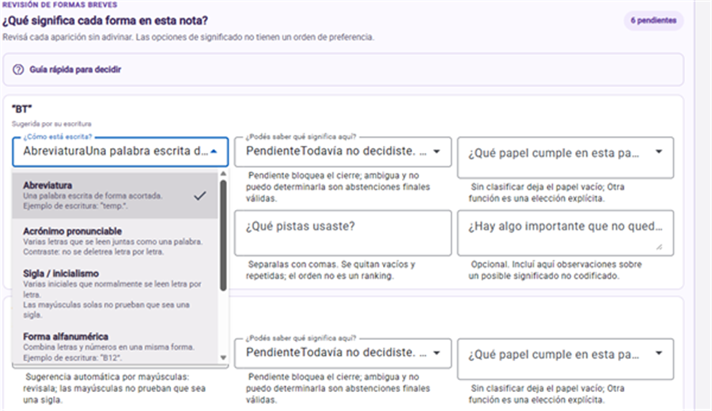
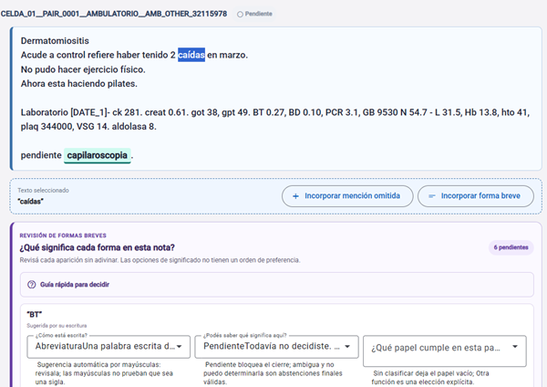
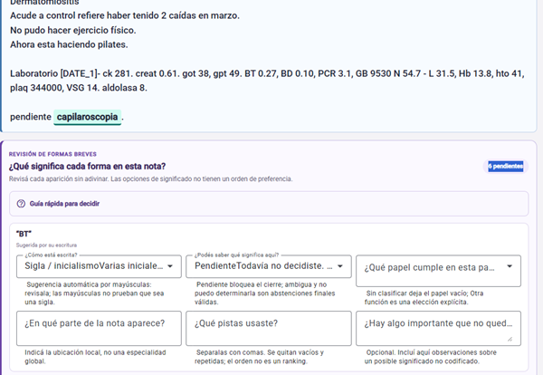
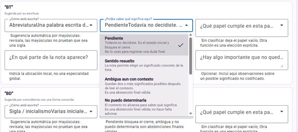
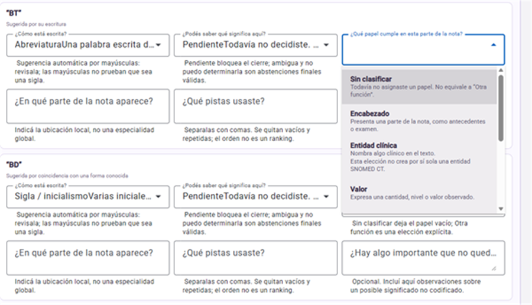
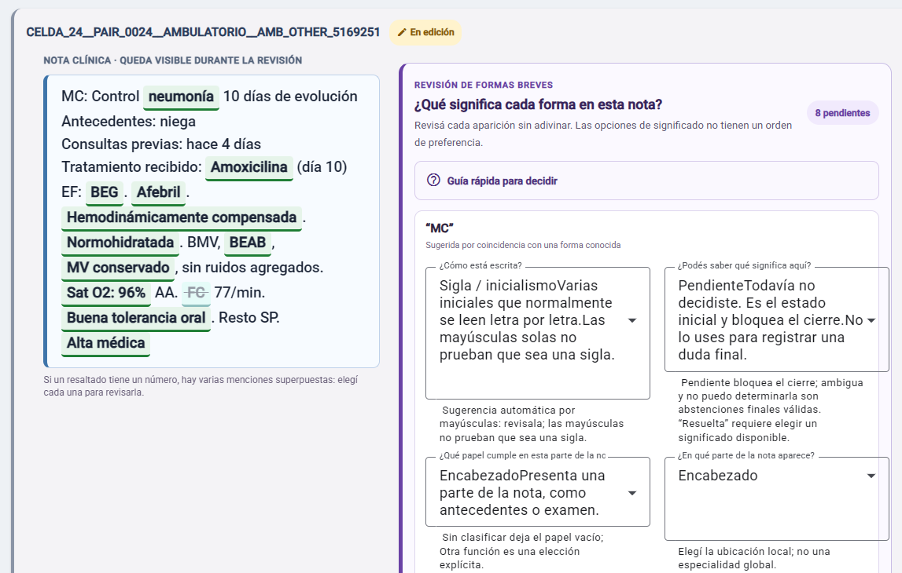

SEMANTIAR | PROTOCOLO OPERATIVO
Manual práctico del anotador - SemantIAr v2
Guía sencilla para revisar formas breves y conceptos clínicos por aparición
Versión 2.2
|
Destinatarios: personas responsables de la anotación de notas clínicas. |
Lea primero los fundamentos metodológicos de la versión 1.2 y luego siga el recorrido operativo en tres pasos: leer la nota, marcar las menciones pendientes y decidir cada aparición. Durante la tarea, mantenga abierta la guía rápida. Los casos son sintéticos y enseñan el método; no constituyen reglas de expansión automática.
|
Material de fundamentos. Este manual explica cómo ejecutar la tarea. Para comprender cómo se construyen las reglas, qué diferencia hay entre reconocimiento de entidades, spans, normalización, mapeo clínico y preanotación, y cómo interpretar las sugerencias, consulte Fundamentos metodológicos para anotadores SemantIAr, versión 1.2 (9 de agosto de 2026). |
|
En una frase. Revise toda la nota, marque cada aparición exacta y elija una clasificación unificada: término con información clínica, término sin información clínica, ambos o no anotar. Absténgase cuando el contexto no alcance y no cree una segunda marca para la misma aparición. |
1. Qué significa «léxico» en este manual
2. Qué es una forma breve
3. Qué hará como anotador
4. Cómo revisar una nota de principio a fin
5. Cómo completar una tarjeta léxica
6. Cómo decidir el significado
7. Función, sección, pistas y comentario
8. Cómo revisar la información clínica
9. Ejemplos concretos
10. Caso de práctica de alta densidad
11. Cierre, exportación y problemas frecuentes
12. Guía rápida durante la anotación
13. Anexo A. Equivalencias técnicas de la interfaz
14. Anexo B. Códigos de pistas contextuales
En lenguaje sencillo, léxico se refiere a las palabras y a las formas que se usan para escribirlas. En este manual, la capa léxica revisa abreviaturas, siglas, iniciales, códigos y combinaciones de letras, números o símbolos. Su objetivo es reconocer qué significa cada forma en el lugar exacto donde aparece; todavía no decide qué enfermedad, procedimiento o dato clínico debe normalizarse.
La aplicación conserva tres preguntas relacionadas. La primera se refiere a la forma léxica: cómo está escrita la expresión y qué significa en esa aparición. La segunda se refiere a la información clínica: qué concepto expresa el fragmento y si corresponde normalizarlo. La tercera describe el contexto: polaridad, certeza, temporalidad y sujeto. “Ambos” permite conservar las dos primeras dimensiones en una misma marca.
La misma porción de texto puede conservar dos dimensiones en una misma marca.
|
Ejemplo sintético |
Qué se revisa en la dimensión léxica |
Qué se revisa en la dimensión clínica y el contexto |
|
TA 150/90 mmHg |
Si TA significa tensión arterial en este contexto. |
La aparición registra el dato de tensión arterial con el valor 150/90 mmHg. No se infiere hipertensión arterial si la nota no lo afirma de manera explícita. |
|
AP: ASMA |
Si AP funciona como encabezado de antecedentes personales. |
ASMA expresa un antecedente clínico del paciente. |
|
SG 29 en una nota obstétrica |
Si SG significa semanas de gestación en esa aparición. |
El conjunto expresa una gestación de 29 semanas. La capa clínica registra esa información si la categoría correspondiente está habilitada. |
|
No confundir expansión con concepto. La expansión de TA es tensión arterial. El hallazgo clínico expresado por TA 150/90 mmHg registra el dato y el valor documentados. No se infiere hipertensión arterial si la nota no lo afirma de manera explícita; son decisiones relacionadas y pueden conservarse en una misma marca cuando corresponda. |
Una forma breve es una manera reducida o convencional de escribir una palabra, una expresión o un dato. Para comprenderla puede ser necesario recuperar una expansión, reconocer un código o mirar el contexto.
Una expansión es la expresión completa que corresponde a la forma breve: por ejemplo, la expansión de TA es tensión arterial. Un encabezado es una etiqueta que anuncia qué información viene después: por ejemplo, AP: delante de ASMA presenta el apartado de antecedentes personales. El encabezado organiza la nota y no necesariamente es un concepto clínico.
Tipos de forma disponibles.
|
Tipo |
Definición sencilla |
Ejemplo orientativo |
|
Abreviatura |
Acortamiento escrito de una palabra o expresión. |
tto. por tratamiento. |
|
Acrónimo pronunciable |
Varias letras que se leen juntas como una palabra, sin nombrar cada letra. |
EPOC, pronunciado «epoc». |
|
Sigla / inicialismo |
Sigla formada por las letras iniciales de una expresión. Cuando se pronuncia letra por letra, es un inicialismo. |
BT, leído «be-te»; FC, leído «efe-ce». |
|
Forma alfanumérica |
Combina letras y números con un uso convencional. |
G2, P0, T4. |
|
Abreviatura simbólica |
Usa barras, signos u otros símbolos para abreviar. |
c/, s/p, +/-. |
|
Otra forma léxica |
Forma breve pertinente que no encaja en las anteriores. |
Explique brevemente por qué la incluyó. |
· Formas breves cuyo significado debe recuperarse por contexto.
· Encabezados abreviados, aunque no sean una entidad clínica.
· Códigos alfanuméricos que transmiten información clínica, por ejemplo P0.
· Formas dudosas o corruptas que parecen intentos de abreviación.
· Palabras completas sin abreviación.
· Números aislados sin una convención asociada.
· Puntuación o separadores que solo ordenan la nota.
· Unidades comunes, salvo que el protocolo indique lo contrario o su uso sea ambiguo.
|
Mayúsculas y números solo orientan. La aplicación puede sugerir Sigla / inicialismo por las mayúsculas o Forma alfanumérica por la presencia de dígitos. Son ayudas provisionales: confirme cómo funciona la cadena en la nota y corrija la sugerencia si corresponde. |
|
Por qué la
opción dice Sigla / inicialismo. Sigla (concepto
amplio): cualquier abreviación formada por las
letras iniciales de los términos de una expresión compleja. |

Figura 1. El menú explica cómo está escrita la forma. En el ejemplo, BT debe revisarse por su uso real; las mayúsculas por sí solas no determinan la categoría.
Este manual se aplica a las notas que recibirá para anotar. Su tarea es revisar cada nota completa, agregar lo que falte, clasificar cada marca y completar las dimensiones que correspondan. En caso de recibir devoluciones del investigador principal, corrija los puntos señalados.
|
Idea principal. Una misma sigla puede significar cosas distintas. Decida cada aparición por separado, según la sección, las palabras cercanas y el resto de la nota. |
1. Lea la nota completa. La especialidad sospechada es una pista general; la ubicación de cada aparición se decide por la sección local.
2. Marque los pendientes. Revise los premarcados, ajuste límites y agregue cada mención que falte con “Marcar para revisar”.
3. Cierre la marcación. Pulse “Terminé la marcación · ver pendientes” para abrir la secuencia de decisiones.
4. Clasifique cada aparición. Elija término con información clínica, término sin información clínica, ambos o no anotar. Complete las dimensiones que correspondan sin volver a marcar el mismo texto.
5. Finalice y exporte. Verifique que no queden decisiones ni campos obligatorios pendientes y descargue el JSON desde la interfaz.
|
Abstenerse también es correcto. Si dos o más significados continúan siendo posibles después de leer la nota, seleccione Ambigua aun con contexto. Si la nota no ofrece información suficiente para sostener ningún significado, seleccione No puedo determinarla. Ambas son respuestas finales válidas: expresan que revisó la aparición y decidió no adivinar. No las deje como Pendiente, porque Pendiente significa que todavía no realizó la revisión. |
Cada anotador recibirá un código individual, por ejemplo A002. Escríbalo exactamente como fue informado. No use el código de otra persona, no lo comparta y no intercambie archivos JSON con otros anotadores.
|
Anotación ciega entre profesionales. Durante la fase de anotación, trabaje de manera independiente: no consulte, compare ni comente sus decisiones con otro anotador. Cada profesional debe resolver las mismas notas sin conocer las respuestas de los demás. Las correcciones o devoluciones posteriores serán comunicadas por el investigador principal. |
☐ Confirme que recibió el archivo y las notas que le corresponden.
☐ Ingrese el identificador de anotador indicado por el estudio.
☐ Trabaje únicamente en el equipo, navegador y carpeta autorizados.
☐ No copie notas, nombres ni identificadores en mensajes, buscadores o herramientas externas.
1. Lea la nota completa. Hágalo antes de decidir una sigla o aceptar un premarcado.
2. Marque las menciones pendientes. Seleccione el texto exacto y use “Marcar para revisar”.
3. Incluya las omisiones. Agregue toda mención clínica o forma breve que no haya sido señalada.
4. Termine la marcación. Pulse “Terminé la marcación · ver pendientes” para abrir el flujo secuencial.
5. Clasifique cada marca. Elija término con información clínica, término sin información clínica, ambos o no anotar.
6. Complete la dimensión correspondiente. Abra la codificación clínica, la tarjeta léxica o ambas, sin volver a marcar la aparición.
7. Use “Ambos” cuando corresponda. Una misma marca puede conservar información clínica y significado local.
8. Normalice la información clínica. Elija categoría, concepto y atributos sin agregar inferencias no previstas por el protocolo.
9. Cierre y exporte. Finalice solo después de completar la secuencia y los controles de calidad.
|
Las sugerencias no son respuestas. Una sugerencia puede tener límites incorrectos, un sentido equivocado o ser un falso positivo. También puede faltar una mención. Revise siempre contra el texto. |
Una mención premarcada es un fragmento que la aplicación señaló para que usted lo revise. En la figura, capilaroscopia aparece en verde. El color indica dónde mirar; no confirma que la selección sea correcta, que sus límites sean exactos ni que deba aceptar un concepto determinado.
· Premarcado en verde: revise la mención, confirme si corresponde, ajuste sus límites si están mal o descártela si es irrelevante.
· Selección hecha por usted: arrastre el cursor sobre el texto omitido. En la figura, caídas está seleccionado en azul.
· Marcar para revisar: use este botón después de seleccionar el tramo exacto. La marca entrará en la secuencia de decisión al terminar la marcación de la nota.
· Clasificación unificada: para cada marca elija término con información clínica, término sin información clínica, ambos o no anotar. No cree una segunda marca para la misma aparición.
· Una misma expresión puede requerir las dos dimensiones. En ese caso, elija “Ambos” y complete la información clínica y el significado local en la misma marca.
La interfaz web no separa acciones por dimensión. La selección se incorpora con Marcar para revisar y se clasifica después, cuando la marcación de la nota ya está cerrada.

Figura 5. `capilaroscopia` es una sugerencia premarcada que debe revisarse. `caídas` fue seleccionada por el anotador y se incorpora con “Marcar para revisar”; luego se clasifica en el mismo flujo que las demás apariciones.
|
Evitar aceptar por inercia. Ver un fragmento premarcado puede llevar a aceptarlo sin revisarlo. Para reducir ese riesgo, lea la nota completa, confirme o corrija cada resaltado, descarte los irrelevantes y agregue todo lo que falte. La aplicación guarda esas acciones para poder auditar el proceso y la cobertura; ese registro, por sí solo, no demuestra que el posible sesgo haya desaparecido. |
El archivo JSON se puede descargar y volver a cargar múltiples veces. Cada descarga conserva los cambios realizados hasta ese momento. Para continuar otro día, guarde el archivo en la carpeta autorizada y cargue la copia más reciente en la aplicación. No modifique el contenido del JSON manualmente: los cambios deben hacerse desde la interfaz.
Cada tarjeta corresponde a una aparición exacta. Complete los campos respondiendo estas preguntas. No necesita memorizar nombres técnicos ni códigos internos.
Lectura sencilla de los campos de la tarjeta.
|
Campo |
Pregunta que debe responder |
Ejemplo breve |
|
Tipo de forma |
¿Cómo está escrita? |
P0 es una forma alfanumérica. |
|
Decisión contextual |
¿Cómo se decide el significado? |
TA junto a 150/90 mmHg puede resolverse. |
|
Sentido observado |
¿Qué significa aquí? |
Elija tensión arterial solo si la nota lo confirma. |
|
Función |
¿Qué papel cumple en esta parte de la nota? |
AP: puede funcionar como encabezado. |
|
Sección |
¿En qué parte de la nota aparece? |
Antecedentes personales, estudios o plan. |
|
Señales contextuales |
¿Qué pistas usaste? |
Encabezado cercano, valor, medicación o negación. |
Los sentidos mostrados son posibilidades recuperadas del inventario. No están ordenados por probabilidad. Compare todos con la nota y no elija el primero por costumbre.
El literal es la forma tal como está escrita en la nota. Si el texto dice BT 0.27, el literal es BT: no escriba bilirrubina total en su lugar y no incluya el valor 0.27. La posición es el lugar exacto que ocupa esa forma dentro de la nota. La aplicación la identifica automáticamente; usted no tiene que contar caracteres.
Revise que el resaltado abarque únicamente la forma breve. Si falta una letra, sobra un espacio, se incluyó un signo que no pertenece o quedó parte de la forma afuera, corrija el inicio o el final de la selección desde la interfaz. Si la nota contiene un error de escritura, conserve el literal original y registre la corrección en Forma errónea o corrupta.

Figura 2. Cada tarjeta corresponde a una sola aparición. En BT se revisan, de izquierda a derecha, cómo está escrita, si puede conocerse su significado, qué papel cumple, dónde aparece, qué pistas se usaron y si hace falta un comentario.
Lea la sección, las palabras cercanas y el resto de la nota. Luego elija la opción que mejor describa lo que realmente puede afirmarse.
· Pendiente. La aparición todavía no fue revisada. No es una respuesta final y bloquea el cierre.
· Sentido resuelto. Un significado queda claramente respaldado. Seleccione el sentido observado.
· Ambigua aun con contexto. Dos o más significados siguen siendo posibles después de revisar la nota.
· No puedo determinarla. No hay evidencia suficiente para proponer un significado defendible.
· Proponer sentido nuevo. El significado es claro, pero no aparece entre las opciones. Escriba una expansión breve.
· Forma errónea o corrupta. La forma contiene un error comprobable. Registre la corrección mínima sin cambiar el original.
· Uso no clínico/estructural. La forma organiza el texto o la plantilla, pero no expresa una entidad clínica en esa aparición.
· No es abreviatura ni acrónimo. El candidato fue un falso positivo y no pertenece a la capa léxica.
Cómo distinguir las decisiones que suelen confundirse.
|
Situación |
Qué seleccionar |
Ejemplo |
|
Dos significados continúan siendo posibles. |
Ambigua aun con contexto |
ACO aparece solo, sin medicación ni referencia anticonceptiva: podría significar anticoagulante o anticonceptivo oral. |
|
No se puede sostener ningún significado. |
No puedo determinarla |
XQ aparece solo en una plantilla local; no figura una expansión y la nota no aporta ninguna pista. |
|
El significado es claro, pero falta en la lista. |
Proponer sentido nuevo |
En Laboratorio: BT 0.27, el contexto confirma bilirrubina total, pero esa expansión no aparece entre los sentidos ofrecidos. |
|
La forma solo presenta una parte de la nota. |
Uso no clínico/estructural |
En AP: ASMA, AP: funciona como encabezado de antecedentes personales; ASMA se revisa por separado. |
|
El sistema marcó una palabra completa. |
No es abreviatura ni acrónimo |
capilaroscopia fue sugerida como forma breve, pero está escrita completa y debe descartarse de la capa léxica. |
|
Qué impide cerrar. No podrá completar la revisión si queda una decisión Pendiente, un Sentido resuelto sin sentido seleccionado, Proponer sentido nuevo sin expansión o Forma errónea o corrupta sin corrección. |

Figura 3. Pendiente significa que la revisión todavía no se hizo. Ambigua aun con contexto y No puedo determinarla son respuestas finales válidas cuando la nota no permite resolver un único significado.
La función pertenece a la aparición, no a la sigla en general.
|
Función |
Cuándo usarla |
Ejemplo |
|
Sin clasificar |
Todavía no se asignó una función o la nota no permite decidirla. |
Úsela solo si el papel de la forma realmente no puede decidirse. |
|
Encabezado |
Abre una sección o un campo temático. |
AP: antes de los antecedentes personales. |
|
Entidad clínica |
Representa una entidad clínica en esa aparición. |
FC como frecuencia cardíaca en una medición. |
|
Valor |
Expresa un grado, estadio, paridad u otro valor. |
P0, G2. |
|
Resultado |
Resume la salida de una prueba o evaluación. |
NEG en un estudio. |
|
Modificador |
Cambia o restringe otra mención. |
Abreviatura de lateralidad junto a una región anatómica. |
|
Marca estructural |
Ordena una plantilla o lista sin abrir un tema clínico. |
Código de campo o transición. |
|
Otra función |
La función se reconoce, pero no encaja en las anteriores. |
Descríbala en el comentario. |
|
Sin clasificar no significa Otra función. Sin clasificar indica que no hay una decisión funcional. Otra función indica que sí la hay, pero no está representada por las opciones disponibles. |

Figura 4. La función describe el papel de esa aparición. En BT bajo Laboratorio, la opción depende de lo que BT represente allí; Sin clasificar solo se conserva cuando el papel todavía no pudo decidirse.
Registre la parte local de la nota: motivo de consulta, antecedentes personales, antecedentes familiares, medicación, examen físico, estudios, evolución, plan, procedimiento, alta u otra. La especialidad general de la nota no reemplaza este dato.
· Estructura: encabezado cercano o posición fija de la plantilla.
· Palabras vecinas: términos, verbos o unidades inmediatamente cercanos.
· Contexto clínico: medicación, laboratorio, anatomía, procedimiento, obstetricia, cardiología o cirugía.
· Patrones: dosis, vía, fecha, negación, número, unidad o formato esperado.
· Atribución: antecedente personal o familiar.
Seleccione o escriba los códigos correspondientes que muestra la aplicación. En el anexo encontrará su equivalencia. Los códigos se separan por comas; no pegue fragmentos de la nota.
· Explique una ambigüedad difícil, una inconsistencia de plantilla o una opción faltante.
· No repita la sección, la función ni las pistas ya registradas.
· No copie nombres, identificadores ni fragmentos clínicos largos.
· Escriba una frase breve, objetiva y suficiente para que otra persona comprenda la decisión.
|
Posibilidad semántica fuera de las categorías. Si existe un significado clínico plausible pero la categoría no está habilitada, escriba en Comentario: «Posible significado clínico no representado: <descripción breve>. Motivo: la categoría no está disponible». Esto registra la observación, pero no crea una categoría nueva. La marca estandarizada para el archivo se encuentra en el Anexo B. |
Cuando una marca se clasifica como término con información clínica o como Ambos, abra su codificación y decida si puede asociarse a un concepto clínico. Trabaje con lo que la nota afirma; no complete información por conocimiento médico. Un término puede tener información clínica aun cuando el concepto SNOMED CT quede pendiente de codificación.
Una selección textual, también llamada span, es el fragmento exacto del texto que queda resaltado para sostener una anotación clínica. En el protocolo operativo actual, las selecciones son habitualmente continuas; las superposiciones se conservan solo cuando representan menciones distintas y defendibles. Es el lugar del texto al que queda unido el concepto. Por ejemplo, en AP: ASMA, la mención clínica es ASMA; AP: se revisa aparte como forma breve y encabezado.
|
Regla de anclaje. Si hay una mención clínica explícita, debe existir una selección textual. No alcanza con elegir solo un concepto SNOMED CT sin mostrar qué palabras de la nota lo expresan. |
· La selección debe copiar exactamente lo escrito, incluso si contiene una abreviatura o un error.
· Si la misma entidad aparece dos veces, cree dos selecciones: una para cada aparición.
· No corrija ni expanda el texto dentro de la selección; la normalización se realiza después.
· Una selección premarcada y una agregada manualmente tienen el mismo valor una vez revisadas.
· Seleccione la mínima mención suficiente que expresa el concepto según la regla del protocolo. No recorte ni amplíe el texto solo para hacer coincidir un concepto terminológico.
· Incluya los modificadores que forman parte de lo que desea conservar, pero no palabras ajenas, encabezados puramente estructurales ni puntuación externa.
· No marque solo un número cuando el nombre del dato es necesario para comprenderlo.
· No cree varias selecciones superpuestas o anidadas solo para representar distintos niveles de detalle de una misma mención. Conserve dos selecciones únicamente cuando el protocolo las reconozca como menciones clínicas diferentes.
Ejemplos para encontrar un límite textual reproducible.
|
Texto de la nota |
Selección recomendada |
Por qué |
|
leve ictericia de piel y mucosas |
Toda la expresión. |
La intensidad y los sitios forman parte de la mención clínica que se desea conservar. |
|
se realizó examen físico |
examen físico, si el esquema lo incluye como procedimiento. |
El verbo introductorio no es necesario; el nombre del procedimiento sí. |
|
LDL 153 o glucemia 100 |
Analito y valor juntos, solo si esa medición es elegible para el esquema. |
El número aislado no identifica el dato. Si la medición no es elegible, no se crea una mención. |
|
radiografía de tórax frente sin infiltrados |
radiografía de tórax frente para el procedimiento; sin infiltrados se revisa aparte como resultado si corresponde. |
La región y la proyección completan el procedimiento; el resultado expresa otra mención. |
|
Dónde cortar en una radiografía. En radiografía de tórax frente, corte después de frente si esa palabra expresa la proyección documentada. No cree tres selecciones superpuestas para radiografía, radiografía de tórax y radiografía de tórax frente. Conserve una sola mención completa. |
Primero delimite lo escrito. Después elija el concepto más específico que esté respaldado por toda esa selección. No alargue ni acorte el texto solo para hacer coincidir un código, y no agregue un detalle que la nota no contiene.
· Si el texto dice radiografía, no elija un concepto que agregue tórax o proyección frontal.
· Si dice radiografía de tórax frente, puede elegir el concepto específico correspondiente cuando esté disponible.
· Si no encuentra una coincidencia exacta, no invente información ni cambie el span: use la opción más específica permitida por el protocolo y deje un comentario o solicite adjudicación.
· La selección fija reduce una fuente de desacuerdo, pero no resuelve por sí sola qué nivel de la jerarquía SNOMED CT corresponde.
· Hallazgo clínico: enfermedad, síntoma, signo o estado afirmado en el texto.
· Procedimiento: acción diagnóstica o terapéutica realizada, indicada o planificada.
· Fármaco: sustancia o producto medicinal mencionado.
· Busque el término necesario, revise el concepto y el identificador, y elija el que representa lo dicho sin agregar gravedad, causa ni diagnóstico.
Atributos que deben corresponder al texto.
|
Dato |
Pregunta de control |
|
Polaridad |
¿La nota afirma o niega la entidad? |
|
Certeza |
¿Está confirmada, sospechada o planteada como diferencial? |
|
Temporalidad |
¿Es actual o histórica? |
|
Sujeto |
¿Corresponde al paciente o a un familiar? |
|
Aplicar únicamente las interpretaciones previstas. Use una interpretación derivada de un valor solo cuando el protocolo la haya definido. En este manual, TA 150/90 mmHg registra tensión arterial y el valor documentado; no se interpreta como hipertensión si la nota no lo afirma de manera explícita. Fuera de una regla explícita, no agregue diagnósticos por conocimiento médico. |
· Selección léxica: TA, sigla / inicialismo.
· Decisión léxica: Sentido resuelto como tensión arterial si el valor, la unidad y la sección lo confirman.
· Pistas: patrón de valor, unidad y contexto cardiovascular.
· Selección clínica: TA 150/90 mmHg; no seleccione solo el número.
· Capa clínica: registre hipertensión arterial como hallazgo clínico, de acuerdo con el criterio de interpretación establecido por este protocolo.
· Forma breve: AP, usada como encabezado.
· Decisión léxica: Uso no clínico/estructural si su función es organizar antecedentes personales.
· Selección clínica: ASMA se anota por separado como antecedente del paciente.
· Situación: la expresión aparece en una evolución obstétrica que describe una gestación en curso.
· Forma breve: SG es una sigla / inicialismo y 29 indica la cantidad de semanas.
· Decisión léxica: resuelva SG como semanas de gestación porque la sección obstétrica y el número respaldan esa lectura.
· Selección clínica: SG 29 expresa una gestación de 29 semanas. Registre esa información si la categoría correspondiente está habilitada.
· Si falta el contexto obstétrico: no suponga este significado; conserve la ambigüedad o indique que no puede determinarlo.
· Con medicación claramente identificable: puede resolverse el sentido léxico y anotarse el fármaco documentado.
· Sin contexto suficiente: seleccione Ambigua aun con contexto; la especialidad por sí sola no decide.
Si una cadena parece una abreviatura conocida pero contiene un error evidente, seleccione Forma errónea o corrupta y escriba únicamente la corrección mínima. El texto original debe conservarse.
|
Texto sintético. Este fragmento sirve para practicar el método. No es una plantilla de respuestas ni debe memorizarse. |
29 GI P0 1C
FUM: MAC ACO AQ: CESAREA AP: ASMA
AO: ABO CA GSTRICO // EX MAMARIO: NORMAL AXILAS NEG
// TRAE ECOTV /(1/23): DLN // PAP PENDIENTE
1. Separe las apariciones sin expandir todavía: GI, P0, 1C, FUM, MAC, ACO, AQ, AP, AO, ABO, CA, EX, NEG, ECOTV, DLN y PAP.
2. Identifique la función: encabezado, entidad, valor, resultado, modificador o marca estructural.
3. Ubique cada forma en su sección local. No aplique un diccionario gineco-obstétrico a toda la nota.
4. Use las pistas cercanas: dos puntos, números, palabras vecinas, negación, estructura y posición.
5. Resuelva solo lo suficientemente respaldado. Mantenga el resto como ambiguo o desconocido.
6. Clasifique la marca. Los encabezados no son conceptos; las palabras completas y las expresiones clínicas se revisan según la opción elegida y el contexto.
Lectura prudente del caso: enseña qué anclar y dónde abstenerse; no es una clave automática de expansiones.
|
Fragmento |
Qué conviene registrar |
Qué no debe suponerse |
|
29 |
Consérvelo como dato contextual. Trátelo como edad solo si la posición o la plantilla lo establece de manera inequívoca. |
No agregue la palabra «años» al texto ni cree un hallazgo solo por el número aislado. |
|
GI P0 1C |
Revise tres apariciones por separado. P0 y 1C pueden funcionar como valores de una historia obstétrica si la convención local lo confirma. |
No cambie silenciosamente GI por G1. Si se comprueba una confusión entre letra y número, use Forma errónea o corrupta. La combinación requiere confirmar la convención de la plantilla. |
|
FUM: |
Puede resolverse léxicamente como encabezado si la plantilla confirma su uso. |
Después de los dos puntos no hay un valor interpretable; no invente una fecha de última menstruación. |
|
MAC ACO |
El patrón local puede respaldar método anticonceptivo y anticonceptivos orales. Registre las dos formas por aparición y anote ACO clínicamente si el esquema lo incluye. |
No elija esa expansión solo porque la nota es gineco-obstétrica; confirme el campo o mantenga la ambigüedad. |
|
AQ: CESAREA |
AQ: puede funcionar como encabezado. CESAREA es una mención clínica explícita y se selecciona como procedimiento histórico. |
No incluya el encabezado dentro del span de CESAREA ni agregue fecha o indicación. |
|
AP: ASMA |
AP: se revisa como encabezado. ASMA es una mención clínica explícita del antecedente personal. |
No la convierta en asma activa si la nota no documenta actividad actual. |
|
AO: ABO CA GSTRICO |
CA GSTRICO puede seleccionarse como mención de cáncer gástrico. Revise AO y ABO como formas breves. |
No asigne automáticamente el antecedente a un abuelo o a otro familiar sin confirmar la convención local; conserve el sujeto como incierto si la nota no alcanza. |
|
EX MAMARIO: NORMAL |
Si el esquema conserva la evaluación completa, seleccione EX MAMARIO: NORMAL como una mención clínica con resultado normal. |
No seleccione NORMAL solo: fuera de la expresión no indica qué fue evaluado. |
|
AXILAS NEG |
Seleccione la expresión completa como resultado negativo si es elegible. |
No convierta automáticamente NEG en ausencia de adenopatías si esa equivalencia no está prevista por el protocolo. |
|
TRAE ECOTV /(1/23): DLN |
Revise ECOTV como procedimiento y DLN como resultado, cada uno con su propio span si ambos son elegibles y el sentido se confirma. |
Conserve 1/23 tal como aparece; no lo convierta automáticamente en enero de 2023. No expanda DLN sin apoyo contextual o convencional. |
|
PAP PENDIENTE |
Sí conviene incluirlo: seleccione la expresión completa para conservar la prueba y su estado pendiente. Normalice la prueba; el estado no es un resultado. |
No confunda PENDIENTE escrito en la nota con la opción Pendiente de la interfaz, que significa que el anotador aún no decidió. |
|
Cuándo es adecuada una expansión manual. Es adecuada si queda vinculada a la aparición exacta, conserva el texto original, se apoya en pistas registradas y permite abstenerse. No es adecuada como reemplazo global de una sigla. |
|
Resultado clínico resumido del ejercicio. Las menciones más claramente anclables son CESAREA, ASMA, CA GSTRICO, EX MAMARIO: NORMAL, AXILAS NEG, ECOTV, DLN si su sentido se confirma, y PAP PENDIENTE. La interpretación de la edad, la historia obstétrica, el parentesco y varias expansiones depende de la plantilla local. La respuesta correcta es conservar esa diferencia de certeza, no completar una narración clínica fluida a costa de agregar información. |
☐ No quedan candidatos clínicos sin aceptar, corregir o descartar.
☐ No faltan menciones clínicas conocidas.
☐ Cada concepto clínico está unido a una selección textual exacta; no hay conceptos SNOMED CT sin anclaje.
☐ Las apariciones repetidas tienen una selección independiente cada vez que aparecen.
☐ Los límites conservan la mínima mención suficiente según la regla aplicable y no se ajustaron solo para hacer coincidir un código.
☐ Todas las formas breves tienen una decisión contextual.
☐ No faltan formas breves detectadas durante la lectura.
☐ Los sentidos resueltos y los campos condicionales están completos.
☐ Las marcas clasificadas como Ambos conservan la información clínica y el significado local cuando corresponde.
☐ No se crearon diagnósticos ni categorías que no estén expresados en la nota o previstos por una regla explícita del protocolo.
☐ Los comentarios no contienen identificadores ni texto clínico innecesario.
· Revisada con conceptos: existe al menos un concepto clínico válido y normalizado.
· Sin conceptos anotables: la revisión completa concluye que no hay conceptos elegibles.
1. Confirme su identificador de anotador.
2. Descargue el JSON cuando quiera guardar un punto de avance; puede hacerlo varias veces durante la tarea.
3. Para continuar, vuelva a cargar en la aplicación la copia más reciente del JSON.
4. Compruebe que el archivo tenga fecha, tamaño mayor que cero y las notas esperadas.
5. Conserve una copia de respaldo hasta que se confirme la recepción.
6. Entregue el archivo únicamente por el canal seguro definido.
Resolución rápida de problemas.
|
Problema |
Qué hacer |
|
No puedo completar la revisión léxica. |
Busque decisiones Pendiente o campos condicionales vacíos. |
|
La misma forma parece duplicada. |
Localice la tarjeta existente y edite esa aparición. |
|
No encuentro un concepto SNOMED. |
Simplifique la búsqueda y confirme la edición; no fuerce un concepto aproximado. |
|
El significado clínico no entra en las categorías. |
Regístrelo en Comentario y escale si el patrón se repite. |
|
La sesión se cerró. |
Cargue la última exportación disponible y verifique el progreso restaurado. |
|
El archivo no abre o no exporta. |
No edite el JSON. Conserve el mensaje de error y comuníquelo al responsable. |
Secuencia abreviada para mantener abierta durante la tarea.
|
Paso |
Pregunta de control |
Resultado esperado |
|
1. Leer |
¿Comprendí la sección y el contexto general? |
Mapa preliminar de la nota. |
|
2. Léxico |
¿Revisé cada forma breve y cada omisión? |
Decisiones por aparición. |
|
3. Contexto |
¿Registré significado, función, sección y pistas útiles? |
Decisión léxica comprensible para otra persona. |
|
4. Span |
¿Cada concepto está anclado al menor tramo textual completo? |
Límites claros y repetibles. |
|
5. Clínica |
¿Revisé premarcados, límites y omisiones? |
Menciones clínicas definitivas. |
|
6. Ambos |
¿La marca tiene información clínica y significado local? |
Dos dimensiones en la misma marca. |
|
7. SNOMED |
¿Elegí el concepto más específico respaldado por el span? |
Normalización sin inferencias no previstas. |
|
8. Cerrar |
¿No quedan pendientes ni campos incompletos? |
Nota finalizada. |
|
9. Exportar |
¿La copia tiene el código correcto y las notas esperadas? |
Archivo listo para entrega segura. |
|
Fórmula de decisión. Literal exacto + contexto cercano + sección + resto de la nota compatible = resolución. Si esas piezas no sostienen un único sentido, absténgase. |
|
Solo para consulta. El anotador no debe memorizar estas claves ni editar el JSON. La aplicación las usa para guardar de manera uniforme las opciones explicadas en el cuerpo del manual. |
Equivalencias de Tipo de forma.
|
Opción visible |
Clave interna |
|
Abreviatura |
abbreviation |
|
Acrónimo pronunciable |
acronym |
|
Sigla / inicialismo |
initialism |
|
Forma alfanumérica |
alphanumeric |
|
Abreviatura simbólica |
symbolic_abbreviation |
|
Otra forma léxica |
other |
Equivalencias de Decisión contextual.
|
Opción visible |
Clave interna |
Dato adicional cuando corresponde |
|
Pendiente |
pending |
No es una decisión final. |
|
Sentido resuelto |
resolved |
Requiere Sentido observado (senseId). |
|
Ambigua aun con contexto |
ambiguous |
Abstención final válida. |
|
No puedo determinarla |
unknown |
Abstención final válida. |
|
Proponer sentido nuevo |
new_sense_proposed |
Requiere Expansión propuesta. |
|
Forma errónea o corrupta |
form_error |
Requiere Forma corregida. |
|
Uso no clínico/estructural |
nonclinical |
No se selecciona un sentido clínico. |
|
No es abreviatura ni acrónimo |
rejected |
Cierre como falso positivo. |
Equivalencias de Función en esta aparición.
|
Opción visible |
Clave interna |
|
Sin clasificar |
null |
|
Encabezado |
header |
|
Entidad clínica |
entity |
|
Valor |
value |
|
Resultado |
result |
|
Modificador |
modifier |
|
Marca estructural |
structural |
|
Otra función |
other |
Claves recomendadas para Sección o plantilla.
|
Nombre comprensible |
Clave recomendada |
|
Motivo de consulta |
motivo_consulta |
|
Antecedentes personales |
antecedentes_personales |
|
Antecedentes familiares |
antecedentes_familiares |
|
Medicación |
medicacion |
|
Examen físico |
examen_fisico |
|
Estudios |
estudios |
|
Evolución |
evolucion |
|
Conducta o plan |
conducta_plan |
|
Procedimiento |
procedimiento |
|
Alta |
alta |
|
Otra sección |
otra |
Use únicamente los códigos que correspondan a las pistas realmente observadas. Sepárelos por comas. El orden no indica importancia ni probabilidad.
Diccionario breve de pistas contextuales.
|
Grupo |
Código |
Qué indica |
|
Estructura |
SECTION_HEADER |
Un encabezado cercano delimita el tema. |
|
Estructura |
TEMPLATE_POSITION |
La posición fija en la plantilla orienta el sentido. |
|
Cercanía |
LOCAL_COLLOCATION |
Las palabras o unidades vecinas favorecen un sentido. |
|
Contexto clínico |
MEDICATION_CONTEXT |
La aparición está en un contexto de medicación. |
|
Contexto clínico |
LAB_CONTEXT |
Un analito, unidad o rango de laboratorio aporta evidencia. |
|
Contexto clínico |
ANATOMY_CONTEXT |
Una región anatómica cercana restringe el sentido. |
|
Contexto clínico |
PROCEDURE_CONTEXT |
La forma aparece en un procedimiento. |
|
Contexto clínico |
OBSTETRIC_CONTEXT |
El patrón incluye gestación, paridad o puerperio. |
|
Contexto clínico |
CARDIO_CONTEXT |
Hay signos o mediciones cardiovasculares cercanos. |
|
Contexto clínico |
SURGICAL_CONTEXT |
La historia o técnica quirúrgica aporta evidencia. |
|
Atribución |
FAMILY_HISTORY |
La información se atribuye a familiares. |
|
Atribución |
PERSONAL_HISTORY |
La información se atribuye al paciente como antecedente. |
|
Patrón |
DOSE_ROUTE |
Dosis, frecuencia o vía restringen el sentido. |
|
Patrón |
TEMPORAL_MARKER |
Una fecha, duración o secuencia temporal orienta la lectura. |
|
Patrón |
NEGATION_SCOPE |
La aparición está dentro del alcance de una negación. |
|
Patrón |
VALUE_PATTERN |
El número, unidad o formato esperado respalda la interpretación. |
|
Ejemplo. Para una forma ubicada bajo Antecedentes familiares y apoyada por palabras cercanas, escriba SECTION_HEADER, FAMILY_HISTORY, LOCAL_COLLOCATION. |
|
Marca estandarizada para Comentario. Cuando corresponda registrar una posibilidad semántica no representada, use exactamente POSIBLE_SEMANTICA_NO_CODIFICADA: <descripción breve>; MOTIVO: categoría no habilitada. |
Correspondencia básica para auditoría.
|
Campo visible |
Registro interno |
Regla principal |
|
Tipo de forma |
annotation.formType |
Describe cómo está escrita la forma. |
|
Decisión contextual |
annotation.decisionStatus |
Registra si el sentido se resolvió o si hubo abstención. |
|
Función |
annotation.function |
Describe el papel de esa aparición. |
|
Sección |
annotation.section |
Registra la ubicación local de la nota. |
|
Pistas |
annotation.evidenceCodes |
Se guarda como lista sin vacíos ni duplicados. |
|
Comentario |
annotation.comment |
Texto libre breve; no crea categorías nuevas. |
|
Sentido observado |
annotation.senseId |
Solo se conserva con Sentido resuelto. |
|
Expansión propuesta |
annotation.proposedExpansion |
Solo se conserva al proponer un sentido nuevo. |
|
Forma corregida |
annotation.correctedForm |
Solo se conserva con Forma errónea o corrupta. |
Fin del manual - SemantIAr v2
Esta edición está dirigida a profesionales de salud que anotan notas clínicas en SemantIAr Anotador. La nota queda visible mientras se trabaja: el texto clínico permanece en la columna izquierda y el detalle secuencial se abre en la columna derecha. La interfaz actual presenta una decisión unificada para cada marca.
Este manual explica cómo ejecutar la tarea. Para el fundamento metodológico —reglas, reconocimiento de entidades, spans, normalización, mapeo clínico, preanotación y criterios de calidad— consulte Fundamentos metodológicos para anotadores SemantIAr, versión 1.2 (9 de agosto de 2026).
En “¿Qué representa aquí?” elija una sola opción inicial. La misma marca puede conservar dos dimensiones cuando corresponda; no hay que marcar dos veces el mismo texto.
| Etiqueta visible | Qué significa | Qué se completa |
|---|---|---|
| Término con información clínica | La aparición expresa información clínica, aunque todavía no exista un concepto SNOMED CT defendible. | Jerarquía clínica, búsqueda de concepto, literal y contexto clínico. El estado puede quedar pendiente de codificación. |
| Término sin información clínica | La aparición tiene un significado local o una función léxica, pero no se registra como concepto clínico. | Tipo de forma, “¿Qué significa aquí?”, decisión, función, sección y pistas. |
| Ambos | La misma aparición tiene información clínica y también requiere una decisión de significado local. | Complete las dos dimensiones en la misma marca, de forma secuencial. |
| No anotar | La aparición no es anotable según el protocolo. | No se abren campos de codificación ni de forma breve. |
Si cambia de opción, la interfaz reconfigura la marca existente. Ambos conserva o agrega las dos dimensiones; pasar a una sola elimina únicamente la dimensión que ya no corresponde. No cree una segunda marca para compensarlo.
Al abrir una marca, el panel de detalle queda junto a la nota y termina con “Mención anterior”, “Volver a marcas” y “Siguiente mención”. Use “Volver a marcas” solo para regresar a la lista; la decisión normal continúa hacia abajo con el control siguiente.
Para una marca clínica, abra la codificación y complete categoría, búsqueda, concepto, texto literal y las cuatro dimensiones de contexto: polaridad, certeza, temporalidad y sujeto. Para una marca sin información clínica, complete la tarjeta léxica. En “¿Qué significa aquí?” el valor elegido o escrito es el que se incorpora a la anotación; no hay un campo adicional que duplique esa decisión.
Los campos cerrados usan listas desplegables. Al abrir una lista, cada opción muestra su renglón completo y la explicación; “¿Qué pistas usaste?” admite varias selecciones. El único texto libre previsto para la tarjeta es el significado cuando no existe una opción disponible y el comentario breve de trazabilidad si realmente agrega información.
Finalice la nota solo cuando no queden marcas pendientes y todas las dimensiones elegidas estén completas. La confirmación de cierre aparece al final de la nota. Descargue el JSON de avance para conservar o entregar el trabajo; para continuar, cargue la copia más reciente desde la interfaz y no la edite manualmente.
Los campos de escritura rápida para agregar una mención o una forma breve se mantienen como ayuda para celular. En la versión web de escritorio, seleccione el texto directamente en la nota y use “Marcar para revisar”; no duplique la misma aparición desde esos campos.

Dos menciones válidas pueden compartir parte del mismo texto. La aplicación ahora las conserva y las muestra con un resaltado rayado y un número. Seleccione cada marca para revisarla por separado. No cambie los límites solo para evitar una superposición; aplique la regla de anclaje del span y conserve cada mención clínicamente defendible. No cree superposiciones únicamente para representar niveles de granularidad de una misma mención.
La versión actual de SemantIAr utiliza spans continuos como modalidad predeterminada. Los spans discontinuos se registran como casos candidatos, pero no deben construirse desde la interfaz ni forzarse dentro de un único resaltado.
Si la mención puede representarse con un tramo continuo sin incluir palabras ajenas, use un span continuo. Si la expresión parece discontinua pero puede dividirse en menciones clínicas independientes, sepárelas solo si cada una tiene sentido propio. Si un span continuo incorporaría material que no pertenece a la mención y dividirla distorsionaría el significado, marque el caso para adjudicación o absténgase según el protocolo.
Esta decisión es gradual: los spans discontinuos pueden ser más fieles al texto, pero requieren una interfaz de selección múltiple, un formato de offsets diferente y reglas adicionales para solapamientos, adjudicación, métricas y modelos. La política se apoya en la revisión sistemática de 44 estudios de Alhassan et al. (2025), en el modelo específico de Dai et al. (2020) y en la evaluación de reconocimiento y normalización de Trivedi et al. (2020). La evidencia y las referencias completas están en Fundamentos metodológicos para anotadores SemantIAr.
Use “Sentido resuelto” únicamente después de elegir un significado disponible. Si la interfaz no ofrece un significado que pueda confirmar, use “Proponer sentido nuevo”, “Ambigua aun con contexto” o “No puedo determinarla”, según corresponda. Una decisión resuelta sin significado vuelve a Pendiente al cargar el archivo y no permite completar la revisión. Consulte Cómo decidir el significado y la lista de verificación antes del cierre.
Volver al inicio · Volver al recorrido en tres pasos · Volver a las etiquetas